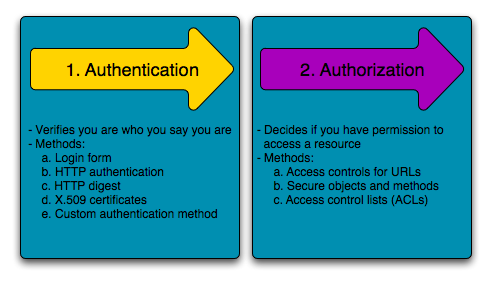

Symfony REST stack
Introduction to Symfony REST stack
by András Rutkai

The backend
The architecture

Uses Composer!
Dependency Injection (DI)
Dependency management
Lazy initialisation
MVC/S?
There are some models in the ORM, but
we write the business logic in Services!
Modularity
Resources belong to bundles (packages)
Bundles belong to vendors
Dependencies among bundles
More features

Doctrine
A real ORM system
Tons of features
Automatic database schema manipulation (schema update, migrations)
Entity validation
Validator annotations
Implicit validation upon form processing
Advanced routing
Routing in annotations but can be generated implicitly (REST resources)
Url management by names
Url parameter restrictions
Automatic parameter conversion
Templating with Twig
Easier syntax
Restrictions in the view (e.g. no DB queries)
OO-like templates
Security
Symfony firewall
 Authorization"/>
User roles, role hierarchy
Caching
Built in caching for big configuration files, annotations, DI...
...and views
Unit testing
It's easy through DI
Preconfigured PHPUnit
Datafixtures
Functional testing
I prefer Behat (w/ Gherkin)
Datafixtures
Debugging
Symfony dev bar
The sizes
Tons of features
Tons of plugins
Huge community
The bad

Caching (again)
It can be a real pain in the ass during development
Slow page loading in Dev mode because of the lack of caching
Complexity
You have to know what you're doing unless you make a big mess
Requires quite a lot configuration (one-time)
Let's see in action!
The frontend
React.js
Better performance w/ virtual DOM
Easy to learn
Redux

Unit testable!